'kube-prometheus-stack' managed with FluxCD
Abstract
Ce howto fait suite au hoxto 'FluxCD / FluxCD - Démonstration par l'exemple'.
Il décrit comment déployer via FluxCD le Helm Chart 'kube-prometheus-stack' qui vise à installer un monitoring de notre cluster Kubernetes reposant sur Prometheus / Alert manager et Grafana.
| Doc | URL |
|---|---|
| artifacthub.io | https://artifacthub.io/packages/helm/prometheus-community/kube-prometheus-stack |
| GitHub | https://github.com/prometheus-community/helm-charts/tree/main/charts/kube-prometheus-stack |
Préparatifs
Préparons notre environnement local :
# Répertoire accueillant nos dépôts Git en local
export LOCAL_GITHUB_REPOS="${HOME}/code/github"
# Mise à jour des copies locales des dépôts dédiés à FluxCD et aux applications qu'il gère
cd ${LOCAL_GITHUB_REPOS}/k8s-kind-apps && git pull
cd ${LOCAL_GITHUB_REPOS}/k8s-kind-fluxcd && git pull
# Création d'un répertoire dédié au monitoring
mkdir -p ${LOCAL_GITHUB_REPOS}/k8s-kind-fluxcd/apps/monitoring
Créons ensuite un namesapce dédié au monitoring :
kubectl create ns monitoring --dry-run=client -o yaml > ${LOCAL_GITHUB_REPOS}/k8s-kind-fluxcd/apps/monitoring/namespace.yaml
kubectl apply -f ${LOCAL_GITHUB_REPOS}/k8s-kind-fluxcd/apps/monitoring/namespace.yaml
Helm Repository
Nous pouvons désormais définir auprès de FluxCD le HelmRepository qui nous intéresse :
Poussons nos modifications sur notre dépôt GitHub pour que FluxCD les prenne en compte :
Helm Release
Tentons l'installation de la stack de monitoring avec les valeurs par défaut (ie. sans devoir les surchager avec le flag '--values') :
Poussons nos modifications sur notre dépôt GitHub pour que FluxCD les prenne en compte :
Vérifions ce qui a été déployé sur le cluster :
NAME READY STATUS RESTARTS AGE
pod/alertmanager-kube-prometheus-stack-alertmanager-0 2/2 Running 0 118s
pod/kube-prometheus-stack-grafana-7cf5785ff8-qp5xf 3/3 Running 0 2m10s
pod/kube-prometheus-stack-kube-state-metrics-65594f9476-8tpcv 1/1 Running 0 2m10s
pod/kube-prometheus-stack-operator-6459f9c556-67dvk 1/1 Running 0 2m10s
pod/kube-prometheus-stack-prometheus-node-exporter-qkjzz 1/1 Running 0 2m10s
pod/prometheus-kube-prometheus-stack-prometheus-0 2/2 Running 0 118s
NAME TYPE CLUSTER-IP EXTERNAL-IP PORT(S) AGE
service/alertmanager-operated ClusterIP None <none> 9093/TCP,9094/TCP,9094/UDP 118s
service/kube-prometheus-stack-alertmanager ClusterIP 10.96.133.65 <none> 9093/TCP,8080/TCP 2m10s
service/kube-prometheus-stack-grafana ClusterIP 10.96.203.186 <none> 80/TCP 2m10s
service/kube-prometheus-stack-kube-state-metrics ClusterIP 10.96.22.99 <none> 8080/TCP 2m10s
service/kube-prometheus-stack-operator ClusterIP 10.96.18.86 <none> 443/TCP 2m10s
service/kube-prometheus-stack-prometheus ClusterIP 10.96.60.161 <none> 9090/TCP,8080/TCP 2m10s
service/kube-prometheus-stack-prometheus-node-exporter ClusterIP 10.96.92.181 <none> 9100/TCP 2m10s
service/prometheus-operated ClusterIP None <none> 9090/TCP 118s
NAME DESIRED CURRENT READY UP-TO-DATE AVAILABLE NODE SELECTOR AGE
daemonset.apps/kube-prometheus-stack-prometheus-node-exporter 1 1 1 1 1 kubernetes.io/os=linux 2m10s
NAME READY UP-TO-DATE AVAILABLE AGE
deployment.apps/kube-prometheus-stack-grafana 1/1 1 1 2m10s
deployment.apps/kube-prometheus-stack-kube-state-metrics 1/1 1 1 2m10s
deployment.apps/kube-prometheus-stack-operator 1/1 1 1 2m10s
NAME DESIRED CURRENT READY AGE
replicaset.apps/kube-prometheus-stack-grafana-7cf5785ff8 1 1 1 2m10s
replicaset.apps/kube-prometheus-stack-kube-state-metrics-65594f9476 1 1 1 2m10s
replicaset.apps/kube-prometheus-stack-operator-6459f9c556 1 1 1 2m10s
NAME READY AGE
statefulset.apps/alertmanager-kube-prometheus-stack-alertmanager 1/1 118s
statefulset.apps/prometheus-kube-prometheus-stack-prometheus 1/1 118s
Mise en place des alertes avec Discord
Création d'un salon Discord
Nous n'allons pas réinventer la roue et réutiliserons le serveur Discord que nous avons provisionné préalablement et dont l'installation a été détaillée dans ce howto.
Nous suivrons également la procédure de création d'un salon de ce howto pour créer un salon privé dédié aux alertes liées à 'kube-prometheus-stack' que nous nommerons 'monitoring' et pour lequel nous créerons un webhook.
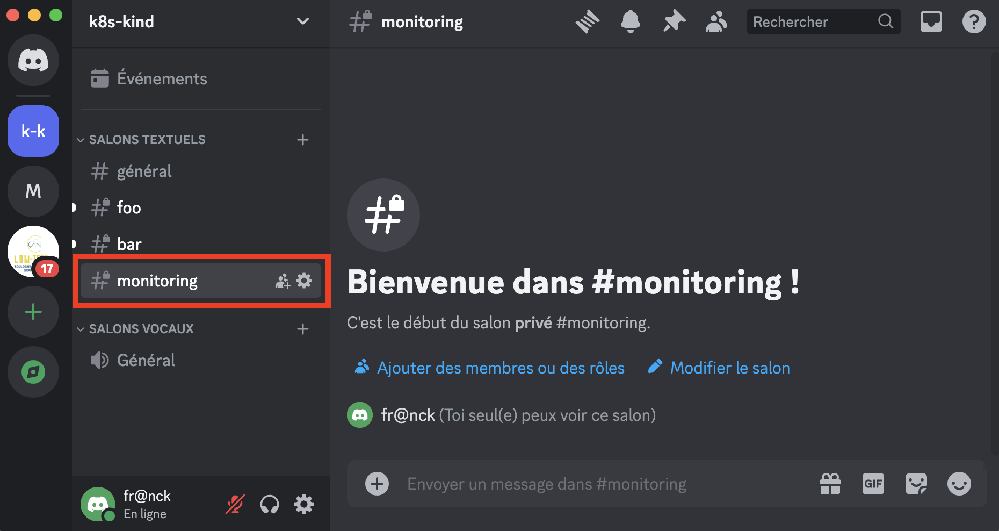
Création du secret correspondant au webhook
export WEBHOOK_FOO="https://discord.com/api/webhooks/1242845059800633425/zyTYEpNZGf6vpd6C1sRLqeW_TGyFEMP2EM8BXAzockt20eeennkSHDKoO2-UxEG0K4ah"
export LOCAL_GITHUB_REPOS="${HOME}/code/github"
cd ${LOCAL_GITHUB_REPOS}/k8s-kind-fluxcd
kubectl -n monitoring create secret generic discord-webhook --from-literal=address=${WEBHOOK_FOO} --dry-run=client -o yaml > apps/monitoring/discord-webhook.secret.yaml
kubectl apply -f apps/monitoring/discord-webhook.secret.yaml
Création du 'notification provider'
Configuration de l'alerte Discord dans FluxCD
export LOCAL_GITHUB_REPOS="${HOME}/code/github"
cd ${LOCAL_GITHUB_REPOS}/k8s-kind-fluxcd
flux create alert discord \
--event-severity=info \
--event-source='GitRepository/*,Kustomization/*,ImageRepository/*,ImagePolicy/*,HelmRepository/*,HelmRelease/*' \
--provider-ref=discord \
--namespace=monitoring \
--export > apps/monitoring/notification-alert.yaml
---
apiVersion: notification.toolkit.fluxcd.io/v1beta2
kind: Alert
metadata:
name: discord
namespace: monitoring
spec:
eventSeverity: info
eventSources:
- kind: GitRepository
name: '*'
- kind: Kustomization
name: '*'
- kind: ImageRepository
name: '*'
- kind: ImagePolicy
name: '*'
- kind: HelmRepository
name: '*'
- kind: HelmRelease
name: '*'
providerRef:
name: discord
Activation des alertes et notifications
Activation au niveau de FluxCD
Poussons nos modifications dans notre dépôt GitHub :
export LOCAL_GITHUB_REPOS="${HOME}/code/github"
cd ${LOCAL_GITHUB_REPOS}/k8s-kind-fluxcd
git add .
git commit -m "feat: setting up 'monitoring' Discord alerting."
git push
flux reconcile kustomization flux-system --with-source
Vérification de la création des alertes et notifications
Test de l'alerting
Nous allons supprimer la Helm Release et la réinstaller pour nous assurer que nous sommes bien notifiés dans le salon 'monitoring' de Discord :
export LOCAL_GITHUB_REPOS="${HOME}/code/github"
cd ${LOCAL_GITHUB_REPOS}/k8s-kind-fluxcd
# suppression de la helm release :
mv apps/monitoring/helm-release.yaml apps/monitoring/helm-release.yaml.BKP
git add .
git commit -m 'test: removing the prometheus stack.'
git push
flux reconcile kustomization flux-system --with-source
# ré-installation de la helm release :
mv apps/monitoring/helm-release.yaml.BKP apps/monitoring/helm-release.yaml
git add .
git commit -m 'test: re-installing the prometheus stack.'
git push
flux reconcile kustomization flux-system --with-source
L'opération a bien généré une notification comme attendu :
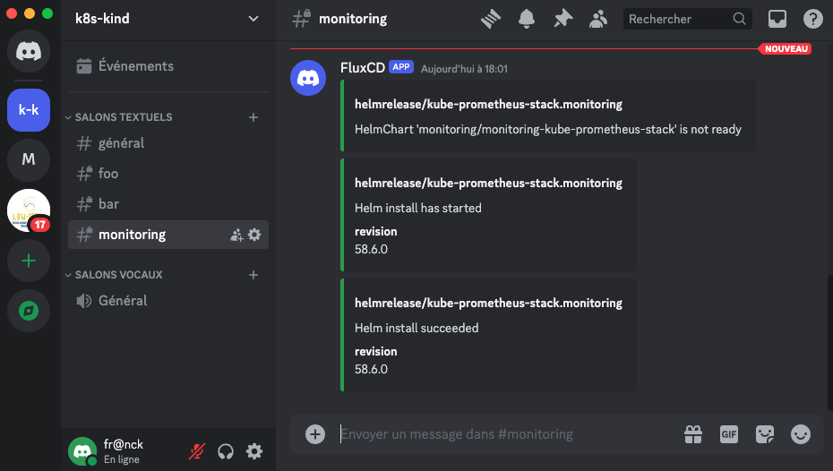
Warning
Discord nous a alerté du déploiement de la Helm Release mais pas de sa suppression.
Accès à la stack de monitoring via le 'port-forwarding'
Activation du port-forwarding pour tous les composants
Détermination des composants de la stack de monitoring
NAME TYPE CLUSTER-IP EXTERNAL-IP PORT(S) AGE
alertmanager-operated ClusterIP None <none> 9093/TCP,9094/TCP,9094/UDP 12h
kube-prometheus-stack-alertmanager ClusterIP 10.96.61.95 <none> 9093/TCP,8080/TCP 12h
kube-prometheus-stack-grafana ClusterIP 10.96.211.70 <none> 80/TCP 12h
kube-prometheus-stack-kube-state-metrics ClusterIP 10.96.216.205 <none> 8080/TCP 12h
kube-prometheus-stack-operator ClusterIP 10.96.97.78 <none> 443/TCP 12h
kube-prometheus-stack-prometheus ClusterIP 10.96.20.214 <none> 9090/TCP,8080/TCP 12h
kube-prometheus-stack-prometheus-node-exporter ClusterIP 10.96.19.61 <none> 9100/TCP 12h
prometheus-operated ClusterIP None <none> 9090/TCP 12h
| Doc | URL |
|---|---|
| prometheus operator beginner's guide | https://blog.container-solutions.com/prometheus-operator-beginners-guide |
Je ne suis pas encore très familier avec cette stack, mais en lisant la doc dans le tableau précédent, je comprends qu'il faut privilégier 'prometheus-operated' et 'alertmanager-operated' pour accéder aux 2 services éponymes.
Port-forwarding de prometheus, alertmanager et grafana
kubectl -n monitoring port-forward service/prometheus-operated 9090:9090 &
kubectl -n monitoring port-forward service/alertmanager-operated 9093:9093 &
kubectl -n monitoring port-forward service/kube-prometheus-stack-grafana 8080:80 &
Accès à Prometheus
Tip
URL d'accès : http://localhost:9090
Assurons-nous que nous accédons bien à Prometheus à l'aide de notre navigateur :
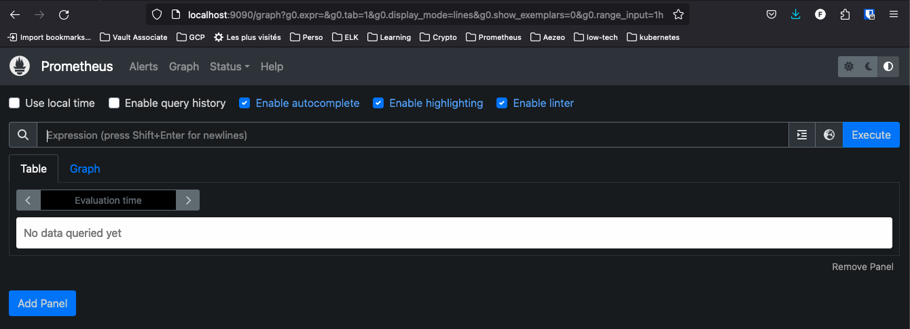
Vérifions ensuite que toutes les 'targets' sont bien accessibles :
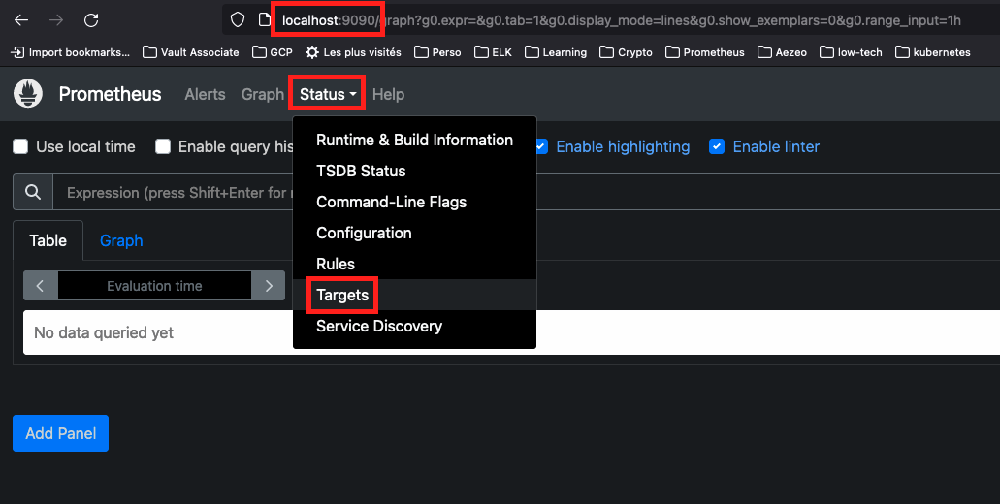
Elles apparaissent toutes en 'healthy' :
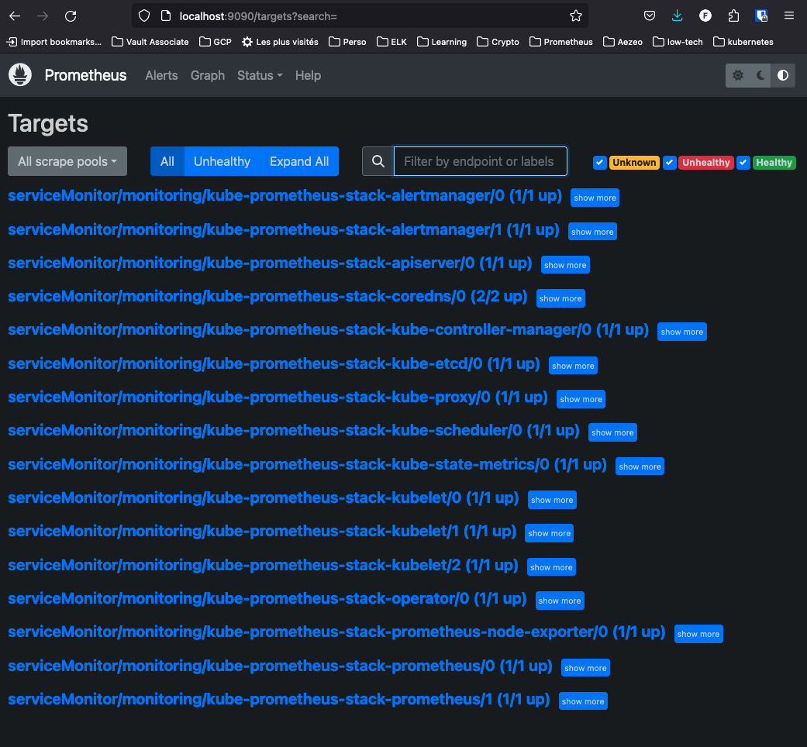
Si tel n'est pas le cas, reportez-vous au howto suivant pour patcher correctement votre cluster KinD : https://papafrancky.github.io/000_setup/Kubernetes_en_local/
Accès à Alertmanager
Tip
URL d'accès : http://localhost:9093
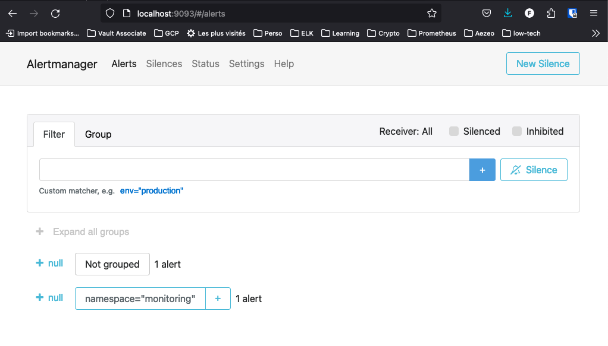
Accès à Grafana
Tip
URL d'accès : http://localhost:8080
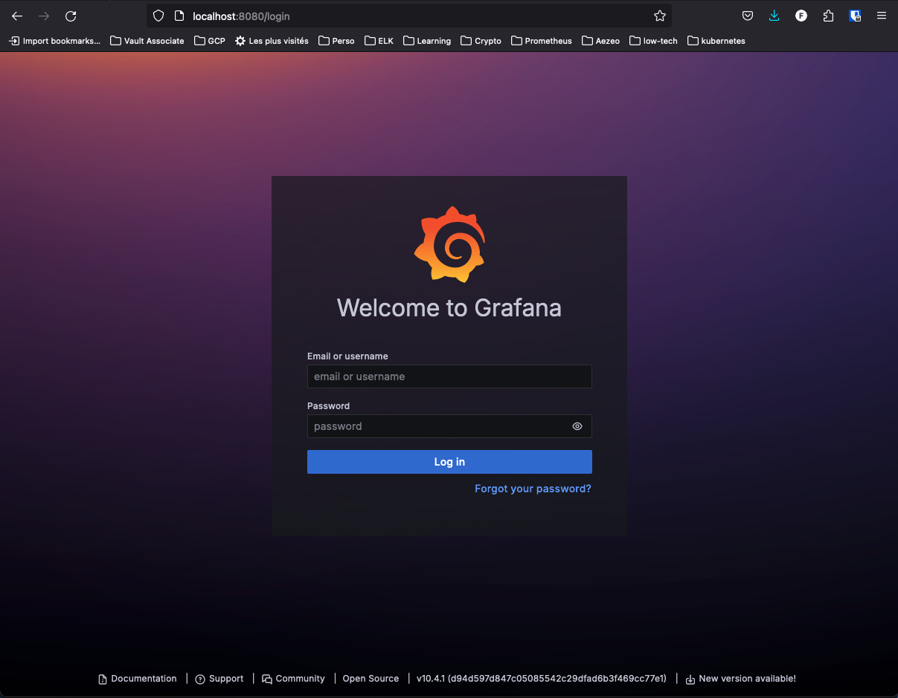
Grafana nécessite un compte (login, mot de passe) pour se connecter. Ce compte est stocké dans le namespace sous la forme d'un 'secret' :
# liste des secrets dans le namespace 'monitoring' :
kubectl -n monitoring get secrets
# détails du secret 'kube-prometheus-stack-grafana' :
kubectl -n monitoring get secret kube-prometheus-stack-grafana -o yaml
# récupération des secrets en base 64 :
kubectl -n monitoring get secret kube-prometheus-stack-grafana -o json | jq -r '.data'
# obtention du login admin :
kubectl -n monitoring get secret kube-prometheus-stack-grafana -o jsonpath='{.data.admin-user}' | base64 -d
# obtention du mot de passe admin :
kubectl -n monitoring get secret kube-prometheus-stack-grafana -o jsonpath='{.data.admin-password}' | base64 -d
NAME TYPE DATA AGE
alertmanager-kube-prometheus-stack-alertmanager Opaque 1 13h
alertmanager-kube-prometheus-stack-alertmanager-generated Opaque 1 13h
alertmanager-kube-prometheus-stack-alertmanager-tls-assets-0 Opaque 0 13h
alertmanager-kube-prometheus-stack-alertmanager-web-config Opaque 1 13h
discord-webhook Opaque 1 13h
kube-prometheus-stack-admission Opaque 3 16h
kube-prometheus-stack-grafana Opaque 3 13h
prometheus-kube-prometheus-stack-prometheus Opaque 1 13h
prometheus-kube-prometheus-stack-prometheus-tls-assets-0 Opaque 1 13h
prometheus-kube-prometheus-stack-prometheus-web-config Opaque 1 13h
sh.helm.release.v1.kube-prometheus-stack.v1 helm.sh/release.v1 1 13h
apiVersion: v1
data:
admin-password: cHJvbS1vcGVyYXRvcg==
admin-user: YWRtaW4=
ldap-toml: ""
kind: Secret
metadata:
annotations:
meta.helm.sh/release-name: kube-prometheus-stack
meta.helm.sh/release-namespace: monitoring
creationTimestamp: "2024-05-24T20:35:45Z"
labels:
app.kubernetes.io/instance: kube-prometheus-stack
app.kubernetes.io/managed-by: Helm
app.kubernetes.io/name: grafana
app.kubernetes.io/version: 10.4.1
helm.sh/chart: grafana-7.3.11
helm.toolkit.fluxcd.io/name: kube-prometheus-stack
helm.toolkit.fluxcd.io/namespace: monitoring
name: kube-prometheus-stack-grafana
namespace: monitoring
resourceVersion: "4610"
uid: 69b6c201-f329-44d2-86dc-f588851b3d8f
type: Opaque
Nous pouvons désormais ouvrir une sessions :
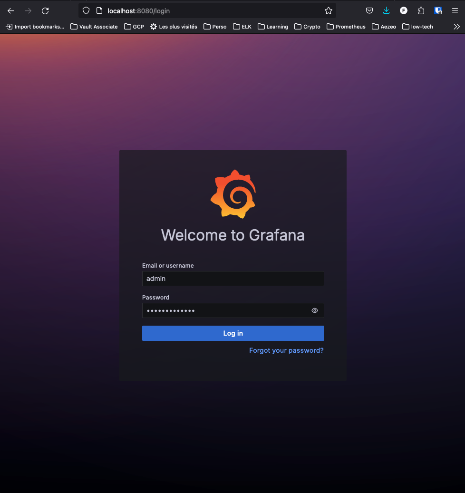
Par défaut, la stack 'kube-prometheus-stack' propose un grand nombre de dashboards :
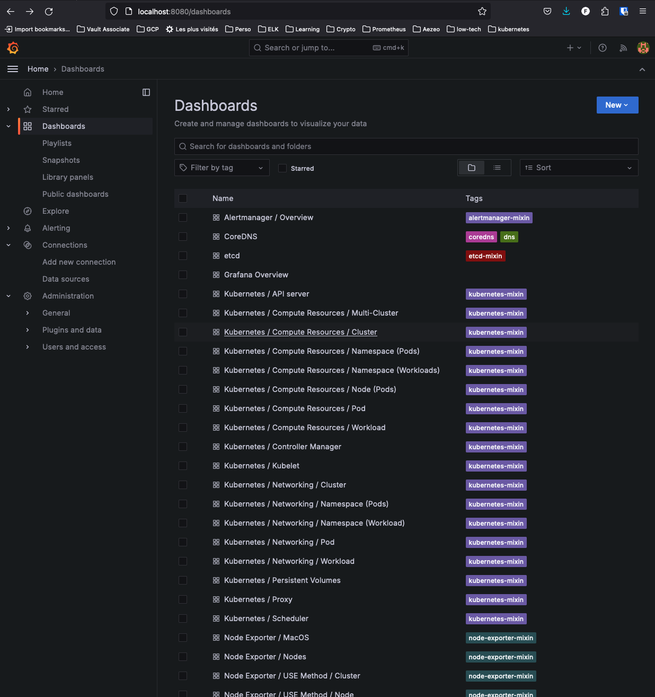
Nous ne passerons pas en revue tous les dashboards, mais voici 2 exemples de dashboards fournis par défaut avec la stack :
Kubernetes / Compute Resources / Cluster
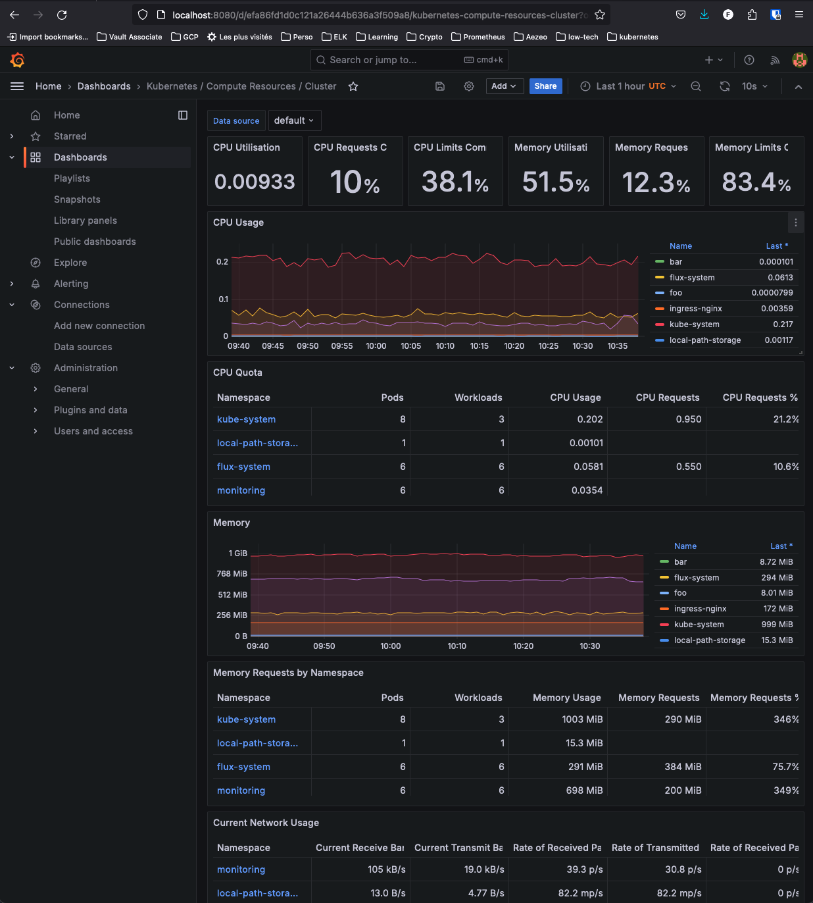
Node Exporter / Nodes
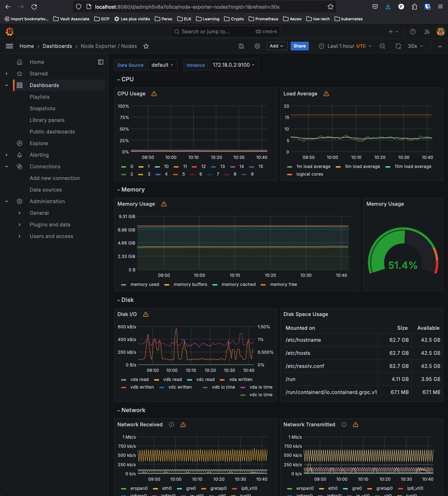
----- TODO -----
- Se poser la question de protéger les secrets avec Vault
- une fois les secrets dans Vault, détruire le cluster et le re-créer avec les dépôts 'k8s-kind-fluxcd' et 'k8s-kind-apps' existants -> montrer l'avantage de FluxCD dans le cadre d'un PRA.